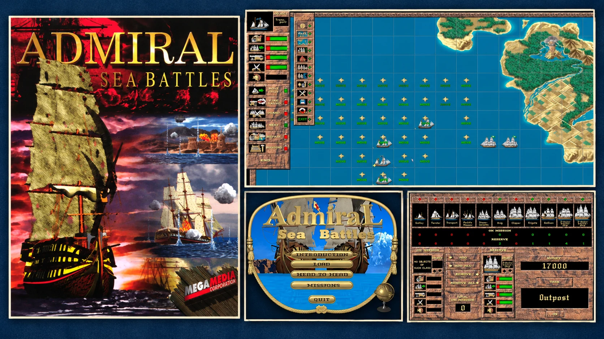
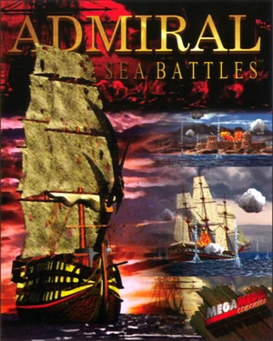
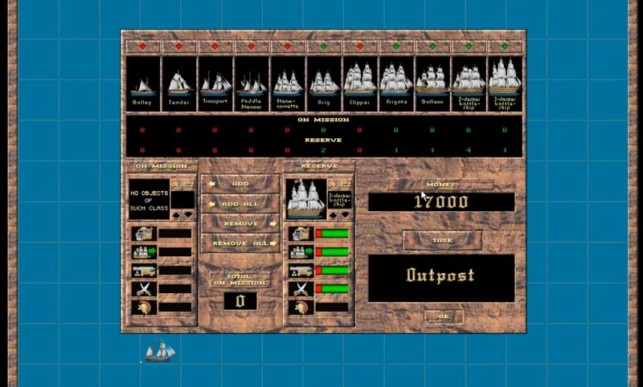

Стаття
До S.T.A.L.K.E.R.: як українські розробники вийшли на світовий ринок ще в 90-х
Від Луганська до світового ринку: Meridian'93, Admiral Sea Battles та українські розробники, які творили історію відеоігор.

Ви напевно чули про S.T.A.L.K.E.R. 2, Metro Exodus або Medieval II: Total War. Але чи знали ви, що задовго до появи цих ігор невелика українська студія вже створювала проєкти для міжнародного ринку, а деякі її розробники згодом долучилися до створення серії Total War?
Сьогодні українські розробники працюють над великими міжнародними проєктами, створюють власні ігрові світи та збирають мільйони гравців по всьому світу.
Але з чого все починалося?
Пропоную повернутися більш ніж на 30 років назад, у 1993 рік, до українського міста Луганськ. Саме тут з'явилася Meridian'93 — одна з перших українських студій, створених спеціально для розробки відеоігор.
І повірте, це були далеко не найкращі час і місце для того, щоб розпочинати власний геймдев-бізнес.
Україна 90-х: створювати всупереч обставинам
У 1991 році Україна відновила незалежність після десятиліть радянського панування. Але розпад СРСР залишив країну з величезними економічними проблемами: у 1993 році інфляція сягнула майже 5000%, підприємства ледве виживали, а власного ринку відеоігор практично не існувало.
І економічна криза була не єдиною проблемою. Протягом 90-х та 2000-х років Москва продовжувала використовувати економічний і культурний вплив, щоб утримувати Україну у сфері російського контролю, домінуючи у значній частині медіа та індустрії розваг і підриваючи українську національну ідентичність.
Та попри всі ці обставини, українські компанії продовжували з'являтися, розвиватися й досягати успіху.
І Meridian'93 була однією з них.
Meridian'93: маленька українська команда з великими амбіціями
Історія Meridian'93 розпочалася з команди 12 науковців та випускників Луганського педагогічного інституту.
До цього вони працювали в компанії «Новотроніка», де займалися комп'ютерною технікою та розробкою навчального програмного забезпечення для шкіл.
Але згодом вирішили спробувати щось інше — створювати відеоігри.
За підтримки місцевого підприємця та інвестора Анатолія Смирнова у 1993 році була заснована Meridian'93.
Перші спроби виявилися не надто успішними. Ранній проєкт студії під назвою Brainstorm не зміг зацікавити аудиторію.
Але замість того, щоб усе закинути, команда продовжила працювати.
Курс на західний ринок
На щастя, Meridian'93 від самого початку орієнтувалася на західний ринок.
Замість того щоб покладатися на практично неіснуючий внутрішній ринок відеоігор, команда почала шукати міжнародних партнерів і відвідувати технологічні виставки в Європі.
І на початку 1996 року ці зусилля нарешті дали результат.
На CeBIT'96 у Ганновері, Німеччина, одній із найбільших технологічних виставок того часу, розробники познайомилися з представниками американського видавництва Megamedia та продемонстрували прототип своєї морської стратегії.
Ця зустріч завершилася видавничою угодою, яка відкрила для першої комерційної гри студії шлях на міжнародний ринок.
І вже 30 вересня 1996 року відбувся реліз Admiral Sea Battles — гри, яку часто називають першою комерційною відеогрою незалежної України.
Admiral Sea Battles (1996): морські шахи з гарматами
Admiral Sea Battles — покрокова стратегія про морські битви епохи вітрильного флоту.

Над грою працювали Дмитро Прокопов, Андрій Дорощук, Віктор Силак та інші учасники Meridian'93.
І це була не просто гра, де два кораблики стріляють один в одного.
18 місій у трьох кампаніях, 11 класів кораблів, ремонт флоту в портах, абордажі, будівництво укріплень і навіть мультиплеєрні битви.
Гравець міг керувати як невеликими швидкими суднами, так і величезними бойовими кораблями. Кожен тип мав свої сильні та слабкі сторони, тому правильний підбір флоту був важливою частиною підготовки до місії.

Але найбільше мене зацікавив підхід розробників до погодних умов.
Коли погода стає твоїм ворогом
Уявіть: ви ретельно розставили свій флот, підготували атаку й ось-ось збираєтеся вступити в бій.
І тут починається шторм.
Раптом ваші кораблі зносить із запланованого курсу, продуманий маневр летить шкереберть, і тепер у вас зовсім інша проблема.
Саме такі ситуації могла підкинути Admiral Sea Battles.
Напрямок вітру, морські течії та шторми впливали на рух кораблів. А особливо сильна негода могла навіть призвести до загибелі судна.
І нагадаю, це був 1996 рік!
Гра також дозволяла захоплювати ворожі кораблі під час абордажу, будувати берегові укріплення та облаштовувати порти для ремонту власного флоту.
Звісно, не все працювало ідеально.
Західні оглядачі критикували гру за повільний темп, надмірну складність та подекуди обмежену тактичну свободу. Деякі місії більше нагадували головоломки з одним правильним рішенням, ніж повноцінні стратегічні битви.
Але, попри недоліки, гра знайшла свою аудиторію за межами України, зокрема в Німеччині, Японії, Південній Кореї та на Тайвані.
І от уявіть собі на мить.
Невелика команда з Луганська, із країни, яка лише нещодавно здобула незалежність і переживала масштабну економічну кризу, змогла розробити власну гру та продавати її на міжнародному ринку.
І це був лише початок.
 The Rarest Gamer
The Rarest Gamer
Ancient Conquest (1999): наступна зупинка — Австралія
Після успіху Admiral Sea Battles команда взялася за нові проєкти.
У 1997 році Megamedia запропонувала українським розробникам переїхати до Австралії та продовжити роботу вже там.
Шкода, що ця частина команди не змогла продовжити свій розвиток в Україні. Але, враховуючи час та обставини, їхнє рішення цілком зрозуміле, і засуджувати їх за це точно не варто.
Більшість початкової команди переїхала й утворила Megamedia Australia, яка згодом стала відома як Ellipse Studios.
Однією з їхніх наступних ігор стала Ancient Conquest: Quest for the Golden Fleece, що вийшла у 1999 році.
Цього разу розробники відійшли від покрокових битв і вирішили створити стратегію в реальному часі (RTS), натхненну давньогрецькою міфологією та пригодами Ясона й аргонавтів.
І мушу визнати, ідей у них вистачало.
Риба, бурштин і міфічні чудовиська
Замість звичних золота й дерева гравці збирали рибу та бурштин.
Ці ресурси використовувалися для розвитку поселень, будівництва кораблів і розширення флоту.
І якщо вже заговорили про кораблі, то система морських битв була значно цікавішою, ніж просто виділити юніта й натиснути на ворога.
Різні кораблі виконували різні завдання. Одні краще підходили для атаки ворожих суден, інші — для руйнування укріплень чи боротьби з екіпажами противника.
Гравці могли оснащувати кораблі зброєю, бронею, додатковими воїнами та навіть облоговими знаряддями на кшталт баліст.
Можна було таранити ворожі кораблі, брати їх на абордаж, створювати маршрути патрулювання та організовувати конвої.
І це ще до того, як у гру вступала міфологія.
Окрім звичайних ворожих флотів, гравцям доводилося боротися із сиренами, гарпіями, циклопами, мінотаврами, морськими чудовиськами й навіть драконами.
А ще були легендарні герої з особливими здібностями, храми та магія.
І все це в морській RTS 1999 року.
Мені взагалі подобається, наскільки сміливо розробники того часу експериментували з механіками.
Сьогодні RTS про давньогрецьку міфологію, з морськими битвами, незвичними ресурсами, кастомізацією кораблів та міфічними істотами звучить як доволі нішевий проєкт.
Але вони мали ідею — і взяли її та реалізували.
І хоча гра не стала великим хітом серед критиків, незвичне поєднання міфології та морської стратегії помітно вирізняло її серед більш традиційних RTS того часу.
До речі, паралельно команда працювала над Submarine Titans — ще однією стратегією в реальному часі, цього разу про підводні битви, яка вийшла у 2000 році.
Схоже, хлопцям справді подобалося робити стратегії про все, що плаває у воді.
Наступний розділ: Creative Assembly та Total War
І от тут історія стає ще цікавішою.
Після роботи над австралійськими проєктами кілька колишніх розробників Meridian'93, зокрема програміст Андрій Дорощук та художник Віктор Силак, продовжили кар'єру в Creative Assembly Australia.
Українські розробники долучилися до створення Medieval II: Total War та Stormrise.
Їхні імена навіть можна знайти в офіційних титрах Medieval II: Total War.
А Андрій Дорощук згодом продовжив кар'єру на посаді технічного директора в Gameloft Australia.
Але сама Meridian'93 не зникла після переїзду більшої частини початкової команди.
У Луганську сформувався новий колектив, який ще багато років продовжував створювати ігри, переважно казуальні.
Серед пізніших проєктів студії були Alexander: The Heroes Hour (2004), Carcassonne: Hunters and Gatherers (2004) та кілька ігор серії Magic Farm.
На жаль, у 2014 році історія отримала значно похмуріший поворот, коли російська війна проти України дісталася Луганська, а місто опинилося під російською окупацією.
Окупація завдала серйозного удару по місцевій українській геймдев-спільноті. А у 2026 році українське видання GameDev DOU повідомило, що Meridian'93 була перереєстрована за російським законодавством на окупованій території.
Не зовсім той фінал, на який сподіваєшся, коли читаєш історію одних із піонерів українського геймдеву.
Але спадщина розробників, які починали свій шлях у цій студії, виходить далеко за межі самої компанії.
Чому я вирішив розповісти цю історію
Мені здається, коли говорять про історію відеоігор, більшість уваги зазвичай приділяють США, Японії та Західній Європі.
І це цілком зрозуміло. Саме там з'явилися деякі з найбільших компаній та ринків, які сформували ігрову індустрію такою, якою ми знаємо її сьогодні.
Але історія геймдеву значно ширша.
Поки американські студії створювали Warcraft II та Diablo, а японські розробники готували наступні хіти для Nintendo та PlayStation, невеликі команди в Україні також намагалися знайти своє місце в індустрії.
Без сформованого внутрішнього ринку відеоігор.
Без розвиненої екосистеми видавців, інвесторів чи інструментів для розробників.
І посеред економічної кризи, масштаби якої сьогодні навіть складно уявити.
Що мені особливо подобається в Meridian'93, так це їхня готовність пробувати щось нове.
Вони не боялися експериментувати з геймплеєм, створювати незвичні механіки чи досліджувати ідеї, які не завжди вписувалися у звичні формули тогочасних ігор.
І мені здається, сьогодні це особливо актуально, коли замість свіжих ідей ми занадто часто отримуємо чергові ремастери та безликі, конвеєрні проєкти. На цьому тлі бажання створювати щось своє, навіть якщо воно неідеальне, викликає в мене особливу повагу.
Їм також вдалося знайти міжнародних партнерів, представити свої ігри гравцям по всьому світу та побудувати кар'єру в студіях, які згодом працювали над одними з найвідоміших проєктів індустрії.
І нагадаю, вони робили все це задовго до появи Steam, Unity Asset Store, тисяч туторіалів на YouTube та інших інструментів, які ми сьогодні сприймаємо як належне.
Історія українського геймдеву — це не лише S.T.A.L.K.E.R., Metro чи сучасні AAA-проєкти.
Це також історія людей, які прокладали до них шлях задовго до того, як Україна стала помітною частиною світової ігрової індустрії.
І мені хочеться, щоб про такі історії знали більше — не лише в Україні, а й за її межами.
POINTS.GS · Lumen Grove
Наш власний маленький розділ цієї історії
Як і перші українські розробники, ми в POINTS.GS прагнемо створювати власні світи, експериментувати з ідеями та робити ігри, у яких є щось більше за самі механіки — власні історії та частинка душі.
Наш поточний проєкт — Lumen Grove, затишна мобільна гра про відновлення чарівного лісу, знайомство з його мешканцями та повернення світла у світ, який колись поглинула темрява.
Якщо хочете дослідити цей світ і підтримати український інді-геймдев, запрошую пограти в Lumen Grove безкоштовно на Google Play.